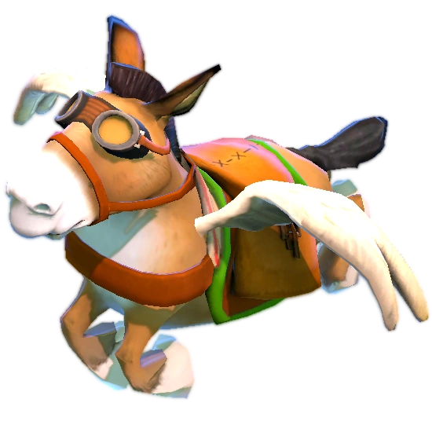

QUEJAS
¿El objeto no era exactamente lo que soñabas? Qué sorpresa. Tranquilo, no hace falta montar una escena épica por eso. Para quejas, cambios o devoluciones existe una maravilla llamada Courier. Le entregas el objeto, explicas el problemita, y él se encarga del viaje. Yo me encargo del resto. Simple, ordenado y sin convertir el mercado secreto en una obra de teatro. Créeme, todos salimos ganando.
